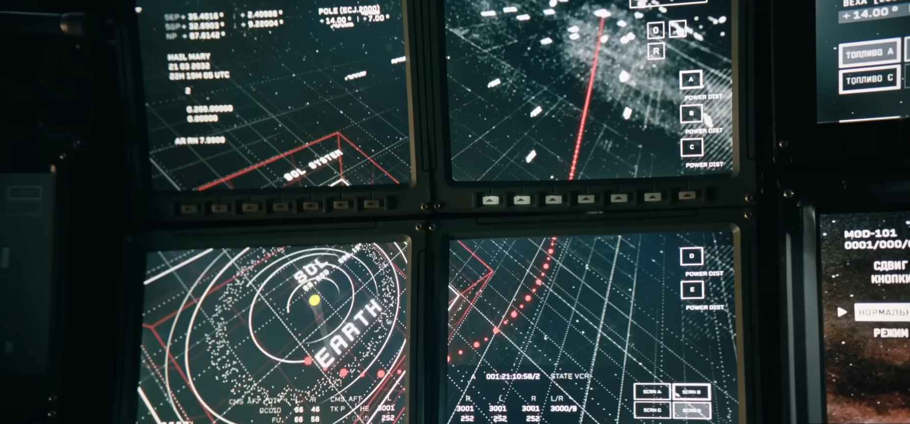

Познакомимся с рабочим столом операционной системы, панелью задач, значками и основными способами запуска программ.
После запуска операционной системы пользователь видит основную область, с которой начинается работа с компьютером. Она называется рабочим столом.
Изображение или цвет, которое используется в качестве фона рабочей области.
Небольшие графические изображения, обозначающие программы, файлы, папки и другие объекты.
Элементы, которые позволяют быстро получить доступ к программе, файлу или папке.
Элемент интерфейса, который помогает запускать программы и переключаться между ними.

На рабочем столе могут находиться различные значки. Они помогают быстро определить, с каким объектом работает пользователь.
Представляет определённый файл и позволяет открыть его с помощью подходящей программы.
Используется для доступа к папке, в которой могут находиться файлы и другие папки.
Может использоваться для запуска установленной программы.
Это ссылка на объект. Удаление ярлыка обычно не удаляет сам объект, на который он указывает.
Панель задач помогает управлять запущенными программами и быстро переходить от одного окна к другому.
На панели задач могут отображаться программы, которые сейчас открыты.
Нажимая на элементы панели задач, пользователь может переходить между открытыми окнами.
С помощью панели задач и меню приложений можно находить и запускать программы.
В разных операционных системах панель задач также может отображать системные сведения.
Одну и ту же программу можно запустить разными способами. Конкретные возможности зависят от операционной системы.
Найти ярлык программы и выполнить по нему двойной щелчок мышью.
Открыть меню приложений, найти программу и выбрать её.
Ввести название программы в поисковое поле операционной системы.
Открыть файл, связанный с определённой программой. Операционная система может автоматически запустить соответствующее приложение.
После запуска программы обычно появляется её окно. С окнами можно выполнять основные действия.
Увеличить окно так, чтобы оно занимало доступную рабочую область.
Убрать окно с экрана, не закрывая программу. Программа продолжает работать.
Перейти к другому запущенному приложению, например через панель задач.
Завершить работу с окном программы. При этом программа обычно прекращает работу.
Попробуй ответить на вопросы своими словами. Главное — понять принцип работы, а не просто запомнить определения.
Рабочий стол является основной областью взаимодействия пользователя с операционной системой. На нём располагаются различные объекты, а панель задач помогает управлять запущенными программами.
Термины, которые важно знать после изучения темы: